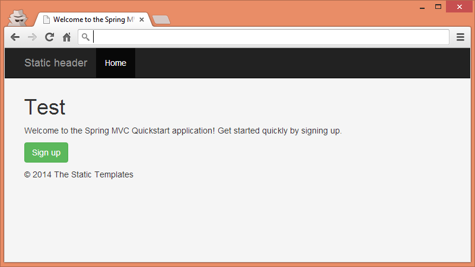
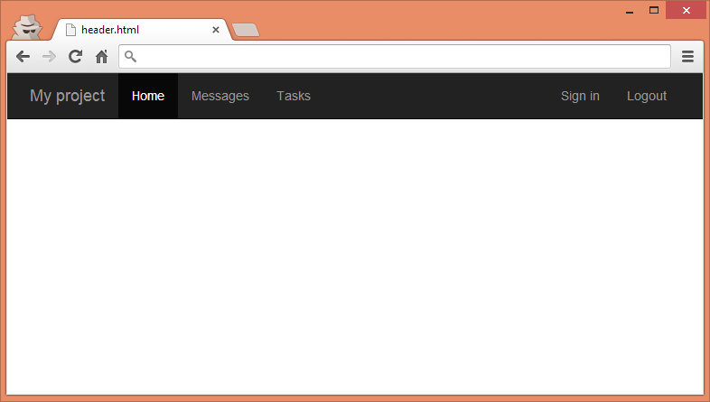
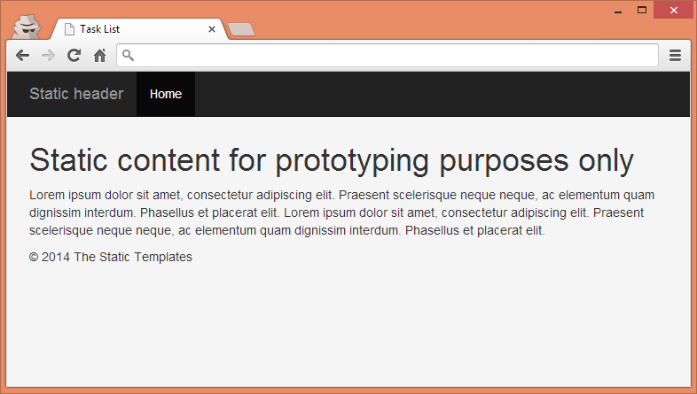
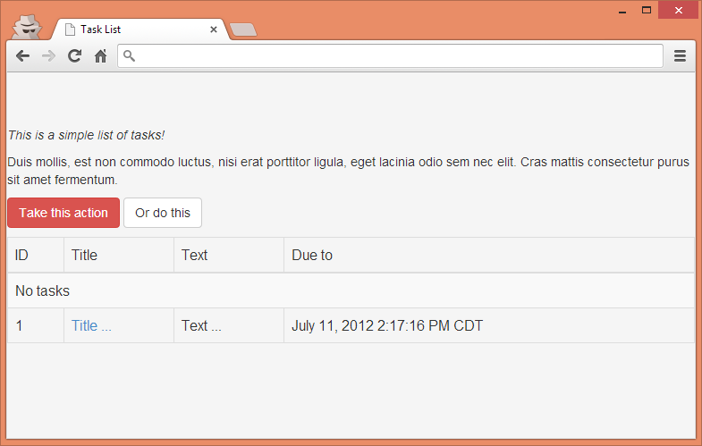

Thymeleaf Page Layouts
TABLE OF CONTENTS
- Introduction
- Example Application
- Thymeleaf Standard Layout System
- Thymeleaf Tiles Integration
- Thymeleaf Layout Dialect
- Other Layout Options
- Future Plans
Introduction
Usually websites share common page components like the header, footer, menu and possibly many more. These page components can be used by the same or different layouts. There are two main styles of organizing layouts in projects: include style and hierarchical style. Both styles can be easily utilized with Thymeleaf without losing its biggest value: natural templating.
Include-style layouts
In this style pages are built by embedding common page component code directly within each view to generate the final result. In Thymeleaf this can be done using Thymeleaf Standard Layout System:
The include-style layouts are pretty simple to understand and implement and in fact they offer flexibility in developing views, which is their biggest advantage. The main disadvantage of this solution, though, is that some code duplication is introduced so modifying the layout of a large number of views in big applications can become a bit cumbersome.
Hierarchical-style layouts
In hierarchical style, the templates are usually created with a parent-child relation, from the more general part (layout) to the most specific ones (subviews; e.g. page content). Each component of the template may be included dynamically based on the inclusion and substitution of template fragments. In Thymeleaf this can be done using: Thymeleaf Layout Dialect and Thymeleaf Tiles Integration.
The main advantages of this solution are the reuse of atomic portions of the view and modular design, whereas the main disadvantage is that much more configuration is needed in order to use them, so the complexity of the views is bigger than with Include Style Layouts which are more "natural" to use.
Example Application
All the samples and code fragments presented in this article are available on GitHub at https://github.com/thymeleaf/thymeleafexamples-layouts
Thymeleaf Standard Layout System
Thymeleaf Standard Layout System offers page fragment inclusion that is similar to JSP includes, with some important improvements over them:
Basic inclusion with th:include and th:replace
Thymeleaf can include parts of other pages as fragments (whereas JSP only includes complete pages) using th:include (will include the contents of the fragment into its host tag) or th:replace (will actually substitute the host tag by the fragment's). This allows the grouping of fragments into one or several pages. Look at the example. The home/homeNotSignedIn.html template is rendered when the anonymous user enters the home page of our application.
Class thymeleafexamples.layouts.home.HomeController
Template home/homeNotSignedIn.html
You can open the file directly in a browser:
In the above example, we are building a page that consists of page header and page footer. In Thymeleaf all fragments can be defined in a single file (e.g. fragments.html) or in a separate files, like in this particular case.
Let's shortly analyze the inclusion statement:
The first part of the statement, fragments/header, is a template name that we are referencing. This can be a file (like in this example) or it can reference to the same file either by using the this keyword (e.g. this :: header) or without any keyword (e.g. :: header). The expression after double colon is a fragment selector (either fragment name or DOM selector). As you can see also see, the header fragment contains a markup that is used for static prototyping only.
Header and footer are defined in the following files:
Template fragments/header.html
...which we can open directly in a browser:
And template fragments/footer.html
Note how that the referenced fragments are specified with th:fragment attributes. This way we can define multiple fragments in one template file, as it was mentioned earlier.
What is important here, is that all the templates can still be natural templates and can be viewed in a browser without a running server.
Including with DOM Selectors
In Thymeleaf, fragments don't need to be explicitly specified using th:fragment at the page they are extracted from. Thymeleaf can select an arbitrary section of a page as a fragment (even a page living on an external server) by means of its DOM Selector syntax, similar to XPath expressions and CSS selectors.
The above code will include a paragraph with class="notice" from thymeleaf.org. In order to make it happen, the template engine must be configured with UrlTemplateResolver:
For the DOM Selector syntax reference checkout this section in Thymeleaf documentation: DOM Selector syntax.
Using expressions
In templatename :: domselector, both templatename and domselector can be fully-featured expressions. In the below example we want to include different fragments depending on a condition. If the authenticated user is an Admin, we will show a different footer than for a regular user:
fragments/footer.html has slightly changed, as we need to have two footers defined:
Parameterized inclusion
Fragments can specify arguments, just like methods. Whenever they are explicitly specified with a th:fragment attribute, they can provide an argument signature that can then be filled in with arguments from the calling th:include or th:replace attributes.
Examples talk best. We can use parameterized inclusion in many contexts but one real life context is displaying messages on different pages of our application after successful form submission. Let's look at the signup process in the application:
As you can see, after a successful signup the user will be redirected to the home page with a flash attribute filled in. We want to create a reusable and parameterized fragment. This can be done as follows:
The above alert fragment takes two arguments: type and message. The type is the message type used for styling a message whereas the message is a text that will be shown to the user. If we wanted, we could have even ensured that arguments existed or met certain conditions using a th:assert attribute.
In order to include alert in any template we may write the following code (please note, that the value of a variable can be an expression):
Parameterized fragments let developers create functional-like fragments that are easier to reuse. Read more about parameterized fragments in the Thymeleaf documentation: Parameterizable fragment signatures.
Fragment inclusion from Spring @Controller
Fragments can be directly specified from a Spring MVC controller, i.e. signup :: signupForm; which can be useful for AJAX controllers that return only a small fragment of HTML to the browser. In the example below, the signup form fragment will be loaded upon AJAX request and the whole signup view - on regular request:
The fragment is defined in signup/signup.html:
The above fragment is loaded when a new user wants to signup from a home page. The modal dialog will be shown upon clicking Signup button and the content will be loaded via AJAX call (see home/homeNotSignedIn.html).
References
Please check Thymeleaf documentation that describes this topic very thoroughly. You can find it here: Template Layout.
Natural templating is greatly explained in Bringing Thymeleaf and Natural Templates to the Spring PetClinic article in And what about the Natural Templates thing? chapter. The example can be found on GitHub.
Thymol
When a Thymeleaf template is used as a static prototype, we cannot see the fragments we are including using the th:include/th:replace host tags. We can only see the fragments aside, opening their own template documents.
However, there is a way to see the real fragments included into our pages while prototyping. This can be done using Thymol, an unofficial JavaScript library that is an implementation of Thymeleaf's standard fragment inclusion functionality, providing static support for some Thymeleaf attributes like th:include or th:replace, conditional display with th:if/th:unless, etc.
As Thymol's author states: Thymol was created in order to provide a more accurate static representation of Thymeleaf's dynamic templating capabilities by offering support for Thymeleaf attributes through a statically accessible javascript library
Thymol documentation and examples can be found on the official project site here: Thymol at SourceForge.net.
Thymeleaf Tiles Integration
The Apache Tiles 2 Dialect was created in order to provide a more comfortable migration path to all those developers who are currently using Apache Tiles 2 with JSP. Tiles is one of the most used Java templating frameworks, and a lot of JSP users are used to thinking in terms of Tiles when it comes to layout.
Tiles dialect offers the possibility to go on doing layouts in the same way with Thymeleaf! In addition, The Tiles dialect allows mixing JSPs and Thymeleaf, so that migrating JSP applications gets much easier.
Configuration
To get started with Tiles Dialect we need to include it into the pom.xml. The dependency is:
We will also need to configure the integration by adding a view resolver bean that will resolve Tiles views, a Tiles Configurer bean and of course the additional dialect to our template engine. Let's go through it really quickly:
Tiles view resolver
This view resolver will resolve Tiles views. We will configure it to have lower precedence, meaning that it will be used when the previous one cannot resolve the views. We also need to set the viewClass property of the resolver to ThymeleafTilesView.class.
Basic view resolver
The basic view resolver will not resolve the views whose names start with message/* — those are our Tiles-based views, and they will be resolved by the previous ViewResolver bean. This is very important, if we want to have several view resolvers in the application working alongside:
Template Engine
We need to add the Tiles Dialect to the template engine:
Tiles Configurer
The Tiles configurer bean will configure the Tiles container by adding Tiles definition files to it:
The complete configuration of the application lives in WebMvcConfig, a Spring java configuration class.
Tiles definition
The Tiles definition is a standard XML file. In our example it looks like this:
In the above example, the message/* views will use a message/layout.html. In the layout file we use two Tiles attributes that will be evaluated to message/{1} :: title and message/{1} :: content fragments accordingly.
The layout file reads as follows:
We can see several things in the above example. Firstly, the layout is a natural template and it is a valid UI design prototype (in this example the layout is very simple):
Secondly, we can mix standard layout (th:include/th:replace) with Tiles dialect. Thirdly, Thymeleaf has ability to include a template fragment instead of the whole template.
Thymeleaf Layout Dialect
Layout Dialect gives people the possibility of using hierarchical approach, but from a Thymeleaf-only perspective and without the need to use external libraries, like Apache Tiles. Thymeleaf Layout Dialect uses layout/decorator templates to style the content, as well as it can pass entire fragment elements to included pages. Concepts of this library are similar to SiteMesh or JSF with Facelets.
Configuration
To get started with Layout Dialect we need to include it into the pom.xml. The dependency is:
We will also need to configure the integration by adding an additional dialect to our template engine:
No other changes are required.
Creating a layout
The layout file is defined in /WEB-INF/views/task/layout.html:
We can open the file directly in a browser:
The above file is our decorator for content pages we will be creating in the application. The most important thing about the above example is layout:fragment="content". This is the heart of the decorator page (layout). You can also notice, that header and footer are included using Standard Thymeleaf Layout System.
The content page looks as follows (WEB-INF/views/task/list.html):
And in the browser it looks like this:
Content of this task/list view will be decorated by the elements of task/layout view. Please note layout:decorator="task/layout" attribute in <html> element. This attribute signals to the Layout Dialect which layout should be used to decorate given view.
And what about Natural Templates using the Layout Dialect? Again, possible! In just the same way as with Tiles Dialect, you simply need to add some prototyping-only markup around the fragments being included in your templates and that's it!
Include style approach with Layout Dialect
Layout Dialect supports not only hierarchical approach — it also provides a way to use it in an include-style way (layout:include). Comparing with standard Thymeleaf includes, with Layout Dialect you can pass HTML elements to the included page. Useful if you have some HTML that you want to reuse, but whose contents are too complex to pass by means of parameterized inclusion in standard Thymeleaf dialect.
This is an example of a reusable alert fragment using layout:fragment (task/alert.html):
The calling of the above fragment may look as follows (task/list.html):
Or:
In this case, the entire alert-content of task/alert (/WEB-INF/views/task/alert.html) template will be replaced by custom HTML above.
References
Please check out the Layout Dialect documentation that describes this topic very thoroughly. You will definitively find some more advanced examples than in this article. You can find the documentation here: Layout Dialect.
Other Layout Options
For some of the developers neither of the solutions presented before is sufficient. Thymeleaf Standard Layout System is not enough and using external libraries is not an option. In that case, the custom solution may be the way to go.
Thymeleaf Custom Layout
One of such a solutions is well described in this blog post: Thymeleaf template layouts in Spring MVC application with no extensions. The idea of this solution is really simple. Let's visualize that with an example:
Example view file (1):
And the layout file (2):
What will happen?
- Controllers return view names, that translate to single Thymeleaf view file (1)
- Before rendering the view, the original viewName attribute in ModelAndView object is replaced with with the name of the layout view and the original viewName becomes an attribute in ModelAndView.
- The layout view (2) contains several include elements: <div th:replace="${view} :: content">Page Content</div>
- The actual view file contains fragments, pulled by the template which embeds the actual view
The project can be found on GitHub.
Future Plans
And finally, what's the future of Thymeleaf layouts? There are some really interesting things planned:
Fragment-as-a-parameter inclusion
Current Thymeleaf fragments allow passing arguments, but these arguments are normally just small pieces of text. It is not really comfortable to pass a complete HTML, as it is possible with hierarchical layout systems (including the Layout Dialect).
In the future, it will be possible to select and pass entire subtrees of markup as arguments. See this ticket for more details.
Decoupled templates
In order to make the communication between UI designers and developers easier, Thymeleaf will offer the possibility to separate HTML markup and Thymeleaf processors into separate files as an option. See this ticket for more details.
Tiles 3 support
The Apache Tiles integration module currently only supports Tiles 2 integration. Tiles 3, although seems to be very alike Tiles 2, has a different architecture and therefore a separate module will be created in the future.
Summary
In this article, we described many ways of achieving the same: layouts. You can build layouts using Thymeleaf Standard Layout System that is based on include-style approach. You can use Apache Tiles with Tiles Dialect, if you are either migrating from Tiles or if Tiles is your choice. You also have powerful Layout Dialect, that uses decorator pattern for working with layout files. Finally, you can easily create your own solution. Hopefully, this article gives you some more insights on the topic and you will find your preferred approach depending on your needs.